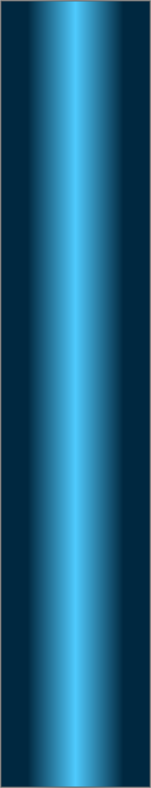
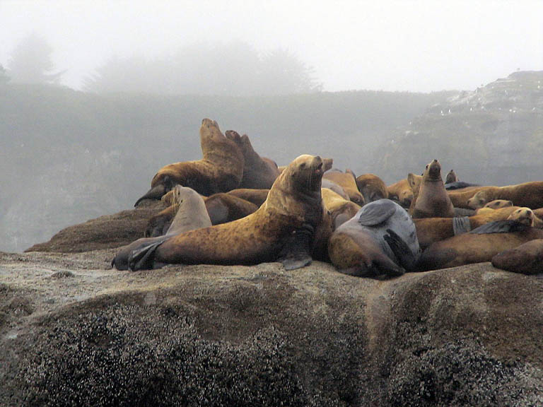
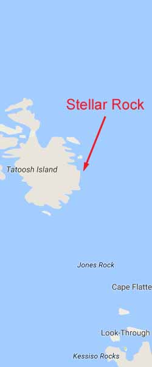
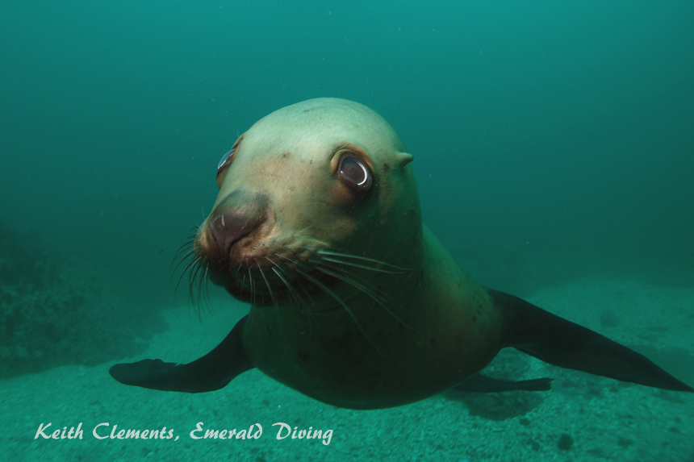
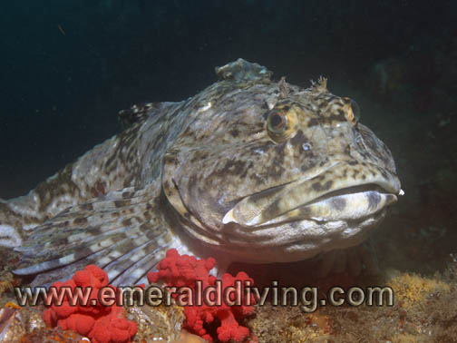

Double click to edit

Stellar Rock
Topography: Sheer rock wall and rocky reef structure situated on a broken shell substrate.
Cape Flattery marine life rating: 3 (w/o sea lions), 5 (w/sea lions)
Cape Flattery structure rating: 3
Diving Depth: 70-95 feet
Highlight: The possibility of diving with stellar sea lions!
Skill level: Advanced
GPS coordinates: N48° 23.690’ W124° 43.961’
Access by boat: The rock marking this dive site doesn’t have an official name, so don’t look for “Stellar Rock” on any charts. It is tucked in the northeast side of Tatoosh Island. The old crane on Tatoosh Island is clearly visible from the west side of the rock. My best experiences with the sea lions are while diving the west side of this rock.
Shore access: None
Dive profile detail: When the wind is blowing right, you might smell this site before you see it.
I run a live boat at this site as I do with all dive sites in the Cape Flattery area.
When the sea lions are present, I gear up several hundred yards away from this rock so I do not to disturb them. I approach the west side of the rock very slowly once I am ready to enter the water. I enter the water before the boat gets within 100 yards of the rock and head for the bottom. I then swim west as I descend until I reach the large open area at the base of the Stellar Rock. The boat pulls away from the rock after dropping off divers to leave the sea lions in peace. The Marine Mammals Protection Act (MMPA) prohibits approaching within 100 yards of marine mammals.
If my intent is to interact with the sea lions, I locate a big rock on the perimeter of the open area. I kneel on the bottom with my back up against the rock so it is hard for the sea lions to sneak up behind me. It usually doesn’t take the sea lions more than five minutes to make an appearance if they are in a curious mood. The sea lions start off cautious and hold up as a group at the edge of visibility (about 30 feet away) and just gawk at me for about a minute. They then disappear to the surface. A minute or so later they come back as a group, but this time they get a little closer. They gawk, then disappear again. This routine continues until the group of sea lions gets really close - sometimes a bit too close as they nibble on fins, hoses, or whatever they can find. I have spent entire dives kneeling in one place on the bottom watching the show and shooting pictures of these incredibly agile giants.
I head southwest and perform an open water ascent once my air supply or no-deco time runs low. I leave right after the group of sea lions leaves for the surface. I look for a long strand of bull kelp to use as an ascent line to safety stops depths. The sea lions often continue to visit me during my ascent to the surface.
This site still offers an excellent off-slack dive if the sea lions are not roosting on Stellar Rock. A massive and sheer rock wall makes up the west side of Stellar Rock. The wall meets the substrate in about 70 feet of water. I usually follow the wall around to the north to a series of large rock formations, channels, caves, and overhangs. Some of the channels continue downslope beyond 90 feet. I manage my gas supply so I can end my dive on the southwest side of the rock in shallower water. I then surface swim to the boat waiting at least 100 yards from the rock.
My preferred gas mix: EAN 38 if my plan is to dive with sea lions, EAN 34 if my plan is to explore the surrounding reef.
Current observations:
Current Station: Strait of Juan de Fuca
Noted Slack Corrections: None
I have never experienced significant current on the west side of Stellar Rock on or off-slack. Keep in mind I only dive the Neah Bay area during minor exchanges.
The potential for significant current increases north of Stellar Rock. When venturing this direction I pay close attention to the current during the dive and backtrack if I start to encounter strong current.
Boat Launch:
Neah Bay Marina. Approximately 6.5 miles from the dive site.
Facilities: None
Hazards:
Current: Current is generally not a factor on the west side of the rock. Stronger current prevails on the north side of the rock.
Swell: This site is well protected from the southwest but only partially protected from the west. Swell varies in summer months from 0 to 10 feet.
Fishing boats: The waters around Tatoosh Island are popular with bottom fishermen.
Sea lions: Sea lions are wild animals and should be treated with the utmost respect. These aggressive animals are very capable of delivering a very harsh, nasty bite - or worse.
Exposure: The Cape Flattery area is subject to unpredictable and extreme weather. This site offers better protection than most, but is very exposed from the north.
Marine life: Sea lions are the big draw, and I do mean big. Diving with these giants is nerve wrecking and exhilarating at the same time. It is also not without substantial risk. I have had more than 12 sea lions buzzing around me on several occasions, including a couple of very large bulls. Sea lions often bite an unknown object in an attempt to figure out what it is. Air hoses and fingers in particular need to be protected, which is why I keep my back to a large rock. Sea lion are known to bark in the face of divers to communicate discontent with the divers’ presence. I have never had this happen at Stellar Rock, but it is a possibility.
Getting to dive with sea lions at this site is not a certainty. The bulk of the female population is often offshore hunting. If the large colony of females is present, there is a good chance that curiosity will get the better of at least some of them and they will join the dive.
Fish populations at this site are not as dense or diverse as the dives in the Strait of Juan de Fuca. I do see a fair number of lingcod and the odd cabezon mulling about, but the variety and density of rockfish species is lacking.
The invertebrate life is outstanding. This is one of the few sites where soft corals such as sea strawberries and strawberry anemones are found. Expect to find huge urticina anemones, yellow encrusting sponges, and the occasional sprawling basket star.
If the swell is minimal (which is usually not the case), I snorkel along the northeast shore of Tatoosh Island adjacent to this rock between dives. I find large patches of colorful gooseneck barnacles and the occasional rock greenling gracing the shoreline.
Cape Flattery marine life rating: 3 (w/o sea lions), 5 (w/sea lions)
Cape Flattery structure rating: 3
Diving Depth: 70-95 feet
Highlight: The possibility of diving with stellar sea lions!
Skill level: Advanced
GPS coordinates: N48° 23.690’ W124° 43.961’
Access by boat: The rock marking this dive site doesn’t have an official name, so don’t look for “Stellar Rock” on any charts. It is tucked in the northeast side of Tatoosh Island. The old crane on Tatoosh Island is clearly visible from the west side of the rock. My best experiences with the sea lions are while diving the west side of this rock.
Shore access: None
Dive profile detail: When the wind is blowing right, you might smell this site before you see it.
I run a live boat at this site as I do with all dive sites in the Cape Flattery area.
When the sea lions are present, I gear up several hundred yards away from this rock so I do not to disturb them. I approach the west side of the rock very slowly once I am ready to enter the water. I enter the water before the boat gets within 100 yards of the rock and head for the bottom. I then swim west as I descend until I reach the large open area at the base of the Stellar Rock. The boat pulls away from the rock after dropping off divers to leave the sea lions in peace. The Marine Mammals Protection Act (MMPA) prohibits approaching within 100 yards of marine mammals.
If my intent is to interact with the sea lions, I locate a big rock on the perimeter of the open area. I kneel on the bottom with my back up against the rock so it is hard for the sea lions to sneak up behind me. It usually doesn’t take the sea lions more than five minutes to make an appearance if they are in a curious mood. The sea lions start off cautious and hold up as a group at the edge of visibility (about 30 feet away) and just gawk at me for about a minute. They then disappear to the surface. A minute or so later they come back as a group, but this time they get a little closer. They gawk, then disappear again. This routine continues until the group of sea lions gets really close - sometimes a bit too close as they nibble on fins, hoses, or whatever they can find. I have spent entire dives kneeling in one place on the bottom watching the show and shooting pictures of these incredibly agile giants.
I head southwest and perform an open water ascent once my air supply or no-deco time runs low. I leave right after the group of sea lions leaves for the surface. I look for a long strand of bull kelp to use as an ascent line to safety stops depths. The sea lions often continue to visit me during my ascent to the surface.
This site still offers an excellent off-slack dive if the sea lions are not roosting on Stellar Rock. A massive and sheer rock wall makes up the west side of Stellar Rock. The wall meets the substrate in about 70 feet of water. I usually follow the wall around to the north to a series of large rock formations, channels, caves, and overhangs. Some of the channels continue downslope beyond 90 feet. I manage my gas supply so I can end my dive on the southwest side of the rock in shallower water. I then surface swim to the boat waiting at least 100 yards from the rock.
My preferred gas mix: EAN 38 if my plan is to dive with sea lions, EAN 34 if my plan is to explore the surrounding reef.
Current observations:
Current Station: Strait of Juan de Fuca
Noted Slack Corrections: None
I have never experienced significant current on the west side of Stellar Rock on or off-slack. Keep in mind I only dive the Neah Bay area during minor exchanges.
The potential for significant current increases north of Stellar Rock. When venturing this direction I pay close attention to the current during the dive and backtrack if I start to encounter strong current.
Boat Launch:
Neah Bay Marina. Approximately 6.5 miles from the dive site.
Facilities: None
Hazards:
Current: Current is generally not a factor on the west side of the rock. Stronger current prevails on the north side of the rock.
Swell: This site is well protected from the southwest but only partially protected from the west. Swell varies in summer months from 0 to 10 feet.
Fishing boats: The waters around Tatoosh Island are popular with bottom fishermen.
Sea lions: Sea lions are wild animals and should be treated with the utmost respect. These aggressive animals are very capable of delivering a very harsh, nasty bite - or worse.
Exposure: The Cape Flattery area is subject to unpredictable and extreme weather. This site offers better protection than most, but is very exposed from the north.
Marine life: Sea lions are the big draw, and I do mean big. Diving with these giants is nerve wrecking and exhilarating at the same time. It is also not without substantial risk. I have had more than 12 sea lions buzzing around me on several occasions, including a couple of very large bulls. Sea lions often bite an unknown object in an attempt to figure out what it is. Air hoses and fingers in particular need to be protected, which is why I keep my back to a large rock. Sea lion are known to bark in the face of divers to communicate discontent with the divers’ presence. I have never had this happen at Stellar Rock, but it is a possibility.
Getting to dive with sea lions at this site is not a certainty. The bulk of the female population is often offshore hunting. If the large colony of females is present, there is a good chance that curiosity will get the better of at least some of them and they will join the dive.
Fish populations at this site are not as dense or diverse as the dives in the Strait of Juan de Fuca. I do see a fair number of lingcod and the odd cabezon mulling about, but the variety and density of rockfish species is lacking.
The invertebrate life is outstanding. This is one of the few sites where soft corals such as sea strawberries and strawberry anemones are found. Expect to find huge urticina anemones, yellow encrusting sponges, and the occasional sprawling basket star.
If the swell is minimal (which is usually not the case), I snorkel along the northeast shore of Tatoosh Island adjacent to this rock between dives. I find large patches of colorful gooseneck barnacles and the occasional rock greenling gracing the shoreline.






Giant Pacific Octopus
Stellar Sea Lions
Stellar Sea Lion
Giant Pacific Octopus
Urticina Anemone
Underwater imagery from this site

Cabezon

Widehand Hermit